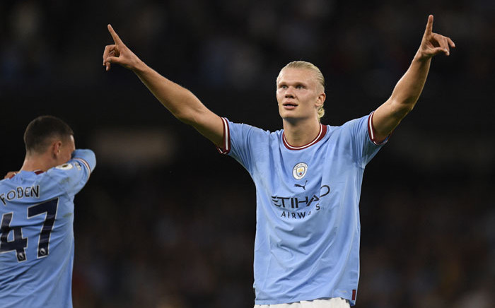
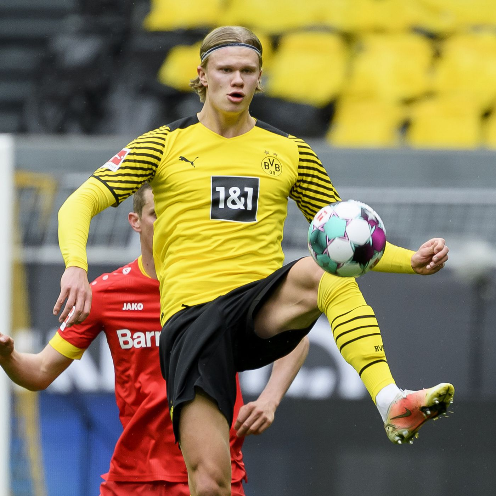
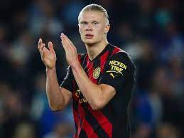
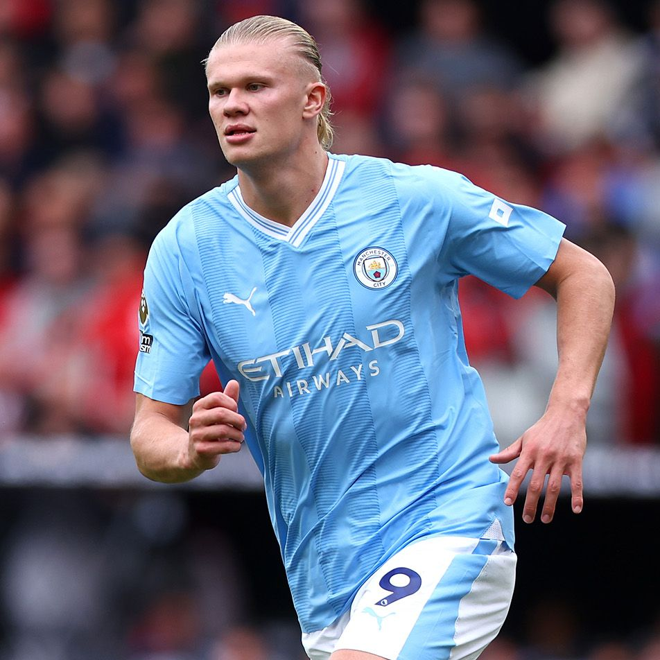
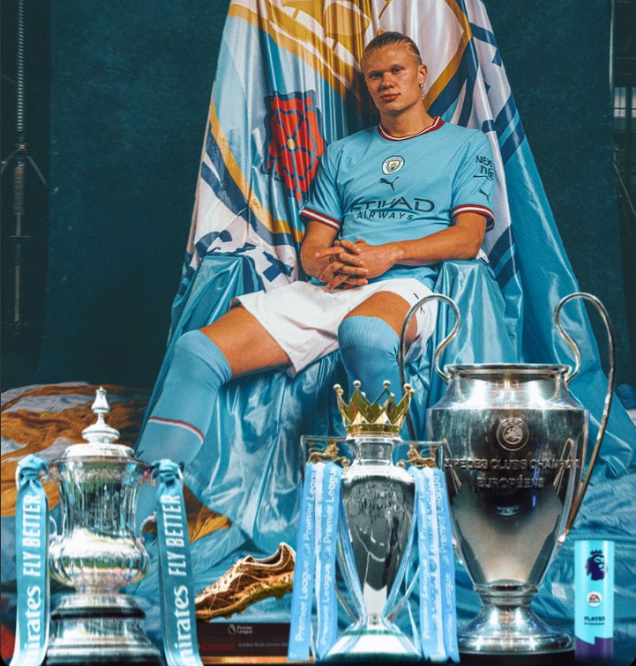
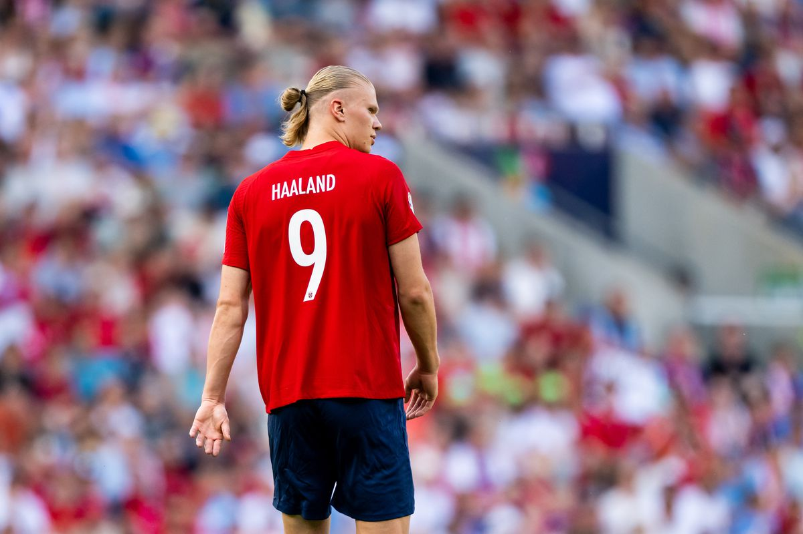
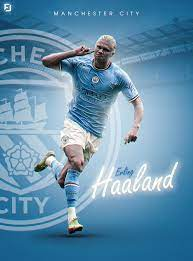
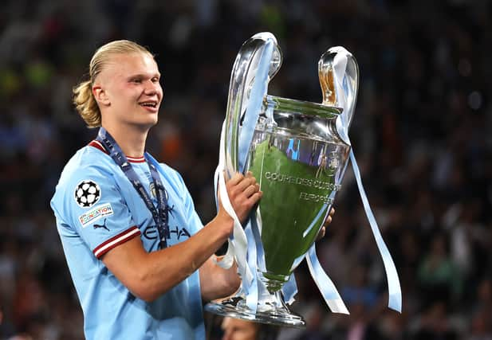
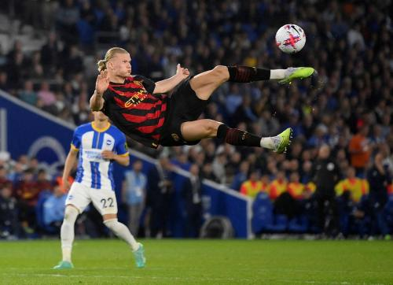

Erling Haaland The Phenomenon of Modern Football
Erling Braut Haaland, born on July 21, 2000, in Leeds, England, is a football prodigy who has taken the football world by storm with his extraordinary talent, physical prowess, and goal-scoring ability. He is recognized as one of the most promising young talents in the sport, captivating fans and analysts alike with his remarkable performances.
Haaland was born into a footballing family. His father, Alf-Inge Haaland, was a professional footballer, and his genes clearly played a significant role in shaping Erling's future in the sport. Erling began his youth football career in his hometown of Bryne, Norway, before moving to Molde FK's youth academy. His standout performances in Norway led to a move to Austrian club RB Salzburg in January 2019.
Erling Haaland's breakthrough came during the 2019-2020 season when he was playing for RB Salzburg. He made headlines by becoming the first teenager to score in five consecutive UEFA Champions League matches. His prolific scoring ability, pace, and physical presence on the field attracted the attention of top European clubs.
In January 2020, Haaland made a high-profile move to Borussia Dortmund in the Bundesliga. His impact was immediate, showcasing his goal-scoring prowess and playing a vital role in Dortmund's attack. He broke several records, further establishing himself as one of the most sought-after strikers in European football.
In 2022 He signed for English Club Manchaster City, It was a great breakthrough in his careear, He won various leagues like FA Cup , Premier league , UEFA Champions league with Manchaster City.
Erling Haaland is a powerful, versatile forward known for his incredible speed, strength, and clinical finishing. Standing at 6 feet 4 inches (1.94 meters), he possesses an imposing physical presence that allows him to dominate defenders. His remarkable speed enables him to make rapid attacking runs, creating goal-scoring opportunities for himself and his teammates.
Haaland has a natural ability to find the back of the net from various positions and distances, whether with powerful shots, well-placed headers, or precise finishes. He possesses a sharp footballing brain, great positioning sense, and excellent decision-making skills.
Haaland has won several individual awards and broken various records during his career. During the 2019-20 season with Salzburg, he became the first teenager to score goals in five consecutive UEFA Champions League matches. He was the top scorer of the Champions League for both the 2020-21 and 2022-23 seasons. In 2020, Haaland won the Golden Boy award, while in 2021 he was named Bundesliga Player of the Season and was included in the FIFA FIFPro World11 in 2021 and 2022. With Manchester City, he has also broken Premier League records, including most goals scored in a season, the quickest individual to score two, three and four hat-tricks, and the first player in the league's history to score hat-tricks in three consecutive home games.Haaland has represented Norway at various youth levels. In the 2019 FIFA U-20 World Cup, he won the tournament's Golden Boot after scoring a record nine goals in a single match. He made his senior international debut in September 2019.
Erling Haaland's future in football is exceptionally promising. With his youth, talent, and demonstrated abilities, he is set to become one of the leading figures in world football. Many top clubs covet him, and his potential transfer will likely be one of the most significant events in the football transfer market in the coming years.
In conclusion, Erling Haaland is a footballing phenomenon who has quickly risen to prominence with his exceptional talent and goal-scoring ability. His blend of physical prowess, speed, and clinical finishing make him a force to be reckoned with on the field. As he continues to evolve and hone his skills, he is destined to leave an indelible mark on the world of football and inspire a new generation of aspiring players.









| Career |
| Years |
Team |
| 2017-2019 |
Molde |
| 2019-2020 |
Red Bull Salzburg |
| 2020-2022 |
Borussia Dortmund |
| 2022- Current Time |
Manchaster City |